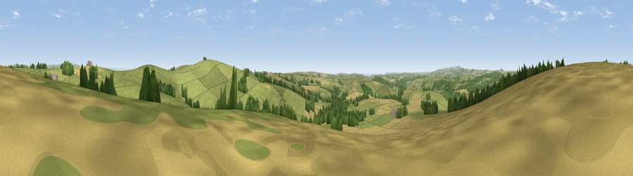

Viewpoint near East Taphouse
#16738 in England · top 33% of its area beats it · near East TaphouseThe view, rendered

A 360° render of this exact spot computed from the terrain model, tree cover and land cover — summer colours, afternoon light, calibrated against photographs of famous viewpoints. Real trees, hedges and buildings will differ in detail.
The panorama
Grey silhouette: terrain skyline in each direction (720 bearings, Earth curvature and refraction included). Dashed green: skyline with trees (+15 m) and buildings (+8 m) as obstacles. Blue strip: how far the ground is visible on each bearing.
Where the view opens
Wedge length = distance to the farthest visible ground on that bearing (vegetation-aware). Rings at 10, 25 and 50 km.
What fills the view
71% grassland · 16% cropland · 12% woodland
Angular shares of the visible panorama (visual magnitude), not map area. Landscape diversity 0.36 (0–1 Shannon).
Key numbers
More beautiful places nearby
The staircase of upgrades: each row has a higher view potential than everything closer. Driving times are estimates from straight-line distance, calibrated against real road routing — check an actual route before setting out.
| Place | Direction | Drive | Score |
|---|---|---|---|
| Viewpoint near East Taphouse | E · 1 km | ~4 min | 65.4 |
| Viewpoint near Lanreath | ESE · 2 km | ~5 min | 75.7 |
| Viewpoint near Lansallos | S · 9 km | ~18 min | 81.1 |
| Pencarrow Head | SSW · 10 km | ~19 min | 86.0 |
| Viewpoint near Stenalees | WSW · 18 km | ~30 min | 88.0 |
| Viewpoint near Crackington Haven | N · 34 km | ~52 min | 88.1 |
| Viewpoint near Combe Martin | NNE · 97 km | ~122 min | 88.9 |
| Holdstone Hill | NNE · 98 km | ~123 min | 90.2 |
50.41393, -4.56971 · source: screening · position refined by local search. Computed location — check access rights before visiting.